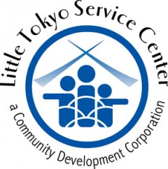

Little Tokyo Service Center Community Development Corporation

Website:
http://ltsc.org Location:
Los Angeles, CA
The mission of the Little Tokyo Service Center, a Community Development Corporation (LTSC), is to meet the critical needs of people and build community throughout Los Angeles. We seek to accomplish this by 1) improving the lives of individuals and families through culturally sensitive social services, 2) strengthening neighborhoods through housing and community development, and 3) promoting the rich heritage of the ethnic community.
Project Description:
The AmeriCorps*VISTA project we are proposing is a critical component of our community technology program to promote broadband deployment and adoption in the low income neighborhoods we serve. We seek to build the capacity of our wireless and wired networks that will be installed in our affordable housing projects through the development of a program that will distribute community-based resources (equipment, trainings, information), establish resident advisory committees, and deploy wireless networks.
We provide technology skills training to youth, seniors, the disabled, and other low-income adults at our three community computer centers call the DISKovery Center, and deliver workshops in classes ranging from basic computing and Internet skills to digital video production. The DISKovery Center also collects donated computers and redistributes them to low-income families through our computer adoption program.
We also operate and manage seven community wireless networks that are deployed within low-income housing buildings or neighborhoods throughout Los Angeles. These free networks have logged over 380 unique users over the last 12 months, and connect residents to the Internet who previously have had little or no access to information technologies due to costs or lack of skills.
Though we have ample evidence pointing to the community need for our proposed project, we determined our organizational need for this project based on our current staff and technology capacity assessment of our staff resources. LTSC has a community technology department composed of full-time and part-time staff (4.1 FTE) dedicated to technology training and skill development, but we lack the staffing/volunteer capacity to develop our community wireless initiative. Though we also have volunteers contributing to the ongoing operations of our technology training department, one of the most critical areas of need we’ve identified is that of a representative who can build our capacity to facilitate community building with technical skills development necessary to connect those in need to the Internet. At the moment, there is no staff position in our organization designated to fulfill this important role. The role of the VISTA member will be to establish the systems and protocols necessary to develop a program that would immediately put volunteers to work on our initiative.
Much of the technical infrastructure has already been built; however, in addition to deploying additional community wireless networks, we seek to improve the community-based capacity to maintain the operations of these networks by promoting the participation of resident users through 1) increased outreach activities and 2) developing user-based advisory committees.
This project is timely because of the increased attention afforded to broadband deployment and adoption by the new federal administration, and LTSC is actively pursuing stimulus funding to help meet the critical information technology needs of our communities. An AmeriCorps*VISTA member will be instrumental in building upon our current programs, and developing our organizational and programmatic capacity to deliver these services thereby producing long-term impacts.
We expect to generate these impacts through the increased participation of low income communities in broadband technologies, and the CTC VISTA Project will accomplish this by growing the number of residents logging on to our wireless networks and developing user-led advisory groups. The project will also increase community engagement by handing ownership and management of the wireless networks to the residents directly impacted by these services.
The proposed project is strongly linked to other programs and activities our organization. The CTC VISTA Project will work closely with our tenant services, social services, and community organizing teams to support the outreach efforts of our wireless networks. These LTSC staff have played an important role in educating our communities about our free Wi-Fi services, and sometimes play a technical support role in connecting first-time users. Part of the CTC VISTA’s role will be to provide resources and other materials for these staff to be better prepared to handle customer support issues.
Project Tangibles:
As mentioned earlier, the successful outcomes of our project include resource materials that will be made available online. Other product outcomes that our project will produce include outreach products (e.g., flyers), community blogs developed by and for community wireless users, email lists, and a database of wireless users.
The CTC VISTA member, as part of his/her professional development, will also develop a blog to document the challenges and successes in deploying community wireless networks.
One of the more tangible outcomes of the project will be the deployment of three new free community Wi-Fi networks in affordable housing communities.
Supported Projects
Community Organizing and Wireless Network Deployment
Melissa Niiya
9/2009 — 9/2011
The AmeriCorps*VISTA project we are proposing is a critical component of our community technology program to promote broadband deployment and adoption in the low income neighborhoods we serve. We seek to build the capacity of our wireless and wired networks that will be installed in our affordable housing projects through the development of a program that will distribute community-based resources (equipment, trainings, information), establish resident advisory committees, and deploy wireless networks.
Our AmeriCorps*VISTA member will support our initiative through community outreach, surveys, and technical support. Specifically, s/he will:
- Develop and implement community-based outreach strategies for community wireless adoption and participation.
- Collaborate with other project partners to develop outreach plans to expand our presence in the targeted communities.
- Develop educational resources for community technology staff and residents in the targeted communities.
- Coordinate and build the capacity of a community advisory committees in the targeted communities
- Organize, coordinate, and develop community education workshops delivered by volunteers on community wireless networks
- Develop sustainability models for the deployment of community wireless networks
- Coordinate volunteer efforts to plan and deploy neighborhood wireless networks
- Meet with technology center managers to coordinate community workshop activities
- Work with project partners to build the technology skills capacity of youth in South Los Angeles
- Develop a volunteer base of technology and community activists to support the deployment and sustainability of community wireless networks
Goal 1: Promote and increase the adoption of broadband within low-income communities
Goal 2: Build the capacity of deployed community Wi-Fi networks through community participation.
The VISTA member has been instrumental in increasing the overall capacity of the Community Technology department. We now have documented standards and procedures for deploying residential and community Wi-Fi networks, as well as a track record and experience that can be used to provide technical assistance to other groups seeking to deploy similar Wi-Fi networks. We have compiled not only the technical procedures for wireless deployment but also a best practices guide, as we have learned from the challenges we’ve faced. The VISTA also helped to develop criteria and a process for selecting future contractors for our new networks. To ensure the sustainability of our networks we need to continue working with LTSC’s real estate and property management departments to develop a system for ongoing support and maintenance of the networks.
The VISTA member also assisted with grant writing, reporting and research to support and build the capacity of the Community Technology department. She also helped with program and curriculum development for the DISKovery Center’s digital media classes covering basic computer and internet skills to more advanced digital video editing and production. She also established a public access WiFi network at LTSC’s DISKovery Computer Center in Little Tokyo. The VISTA’s accomplishments in these areas seemed a natural addendum to the stated goals. She has proven herself to be highly competent in many areas and has therefore been given additional projects and responsibilities, as time and her own interests allowed. Since she is extremely self-motivated and is capable of accomplishing projects thoroughly and quickly, we were able to involve her in additional projects beyond what was proposed.
- Development of community and residential wi-fi resource materials made available online.
- Development and dissemination of publicity and outreach materials to promote the Little Tokyo community through flyers, a community blog developed by and for community wireless users, print materials and a community wi-fi website.
- Establishment of a community wireless blog to document the challenges and successes in deploying community wireless networks.
- Deployment of three new free community Wi-Fi networks in LTSC’s affordable housing communities. Accomplishments toward achieving stated goals:
- Curriculum developed for wifi trainings in the form of a wiki. The wiki was developed with some server assistance from Wataru Ebihara, LTSC’s Network Administrator.
- Resource materials developed for wifi users / volunteers / nonprofits wishing to start wifi networks, also on the wiki.
- Flyers for outreach developed with Spanish translation help from Sugey Salazar, computer instructor.
- Community blog developed using a free blogger account. The VISTA has worked to transition administration of the blog to the LT community council for its ongoing sustainability.
- Computer Adoption Program (CAP) program planned and organized, and additional wifi curriculum developed for the class
- 10 families served.
- Wifi deployed in the Reno Apartments using open source mesh routers from Open Mesh and broadband over power (BPL) technology to deploy a robust network at Reno. Switched Angelina Apartments to open source Open Mesh to enable better usage tracking.
- Usage tracking of Wi-Fi networks
- using free and open source tracking called CoovaOM, developed tracking methods and documentation for residential Wi-Fi networks.
- Developed a Request for Proposals for the development of 5 new broadband networks in affordable housing projects; developed criteria for selecting a proposal and oversaw selection of contractor for these new networks.
Community Outreach and Accessibility Development
Anita Lie
6/2007 — 6/2009
Since it opened over 8 years ago, the DISKovery Center has provided technology education services to over 3,000 community members in a wide range of skills and computer applications. Over 100 members, who include youth, adults, and seniors, enroll in over 20 classes at the DISKovery Center’s programs every quarter.
The DISKovery Center is seeking a full-time VISTA volunteer (monthly stipend provided) to help build the capacity of the Center to reach out to learners with physical and developmental disabilities through assistive technology, program planning, staff training, and community outreach. The VISTA member will assist the program manager with a variety of responsibilities, including the following duties:
• Develop strategies for outreach to persons with disabilities
• Collaborate with other organizations to develop outreach plans to expand our presence in the disabled community.
• Participate in assistive technology trainings provided by our collaborators to become an in-house accessibility specialist, who will then train other staff on teaching strategies
• Develop resources for accessibility including training materials for both staff and individuals with disabilities
• Help develop a new space plan at the center for better accessibility
• Help establish and coordinate a committee composed of staff, members and volunteers to inform the center on disability access needs.
• Help develop a new intake survey and registration process incorporating disability information, and revamp the current database to track this information.
Our CTC VISTA is the DISKovery Centers Accessibility Coordinator. She coordinated all of the meetings with staff and project partners. She also became our in-house AT specialist, and helped recommend our software and hardware purchases. She has developed advanced curriculum at Pacific Bridge. She has also coordinated and facilitated the access committee meetings. Our VISTA has also coordinated our Computer Adoption Program and has developed curriculum for the program. She has also trained staff on the Ubuntu Operating system so that staff can then teach the participants enrolled in our Computer Adoption Program.
Although we have partnered with other organizations that have given us a small number of users with disabilities, we are still short of our goals. Our VISTA has assisted on our outreach plan, and has developed outreach materials but both our centers in Little Tokyo and Echo Park are struggling increase our numbers.
“Our VISTA has been invaluable in assisting the center with its accessibility goals, and has been central in coordinating all aspects of the DISK4All Project. She has been committed to utilizing information and communications technologies to address the needs of our communities. Without our VISTA we would not have the staff nor capacity to achieve our accessibility goals.”
- Steve Wong, supervisor
CTC Program Building
Angela Baker
8/2003 — 8/2004
During our 2003-04 VISTA project year, Ms. Baker has provided important capacity-building solutions and support for our community technology program. Ms. Baker has been responsible for establishing policies and procedures necessary for the operations of our program that include equipment borrowing, curriculum manuals, and “how-to’s” for our volunteer corps.
Goal 1: To increase participants’ self-sufficient use and application of computer and information technology.
Goal 2: To establish a staff and volunteer procedure for troubleshooting / fixing computer workstations.
Goal 3: To help standardize curriculum design and structure and lesson materials organization.
To create policies and guidelines for the use of DISKovery Center’s equipment and software.
Ms. Baker has been responsible for establishing policies and procedures necessary for the operations of our program that include equipment borrowing, curriculum manuals, and “how-to’s” for our volunteer corps.
As part of her workplan, Ms. Baker completed three self-paced tutorials on our most popular subjects in word processing, spreadsheets, and the Internet. She has also created her own column in our quarterly newsletter called “Tech Corner”, and has completed 5 articles on the most common issues that computer users encounter.
Ms. Baker has established a system of tracking and record-keeping that are important to program evaluation. For example, Ms. Baker has created an attendance log for each course offered by our community technology center, a system of generating class certificates from our database, and new course registration forms that with help make our record-keeping more efficient.
Ms. Baker has also created a popular new program entitled “Afternoons with Angie”, which allows participants with certain questions or issues about their computers or other technology to receive personalized, one-on-one attention.
As a result of our AmeriCorps*VISTA’s contribution to our program and community, we have brought Ms. Baker on board as an official part-time staff person to continue her work at our technology center. We recognize the value that Ms. Baker has put into her service as a VISTA, and look forward to her continued contributions.
Job Skills Program Development
Jannette Peterson
6/2001 — 6/2002
The long range goals of the project are to provide affordable technology-based access and training to low income residents of the Downtown / Little Tokyo area and LTSC CDC’s low income housing projects; to support and help develop the community technology capacity among other API agencies; and to function as a comprehensive community technology resource for area residents.
The AmeriCorps VISTA member will be assigned to help oversee the computer job skills development program. This would include outreach activities and identifying candidates among LTSC CDC’s housing projects and the Downtown/Little Tokyo areas. He/She will also be responsible for developing the program curriculum, forming relationships with corporate partners for job placement opportunities, delivering the course training, and providing participant support during open access periods. Other responsibilities will include the training and coordination of our volunteers to assist in classroom instruction.
DISKovery Computer Learning Center Development
Daniel Sheen
6/2001 —
- Support the development of a volunteer team of computer trainers and technicians
- Coordinate our program website and design print materials as a function of outreach activities
- Help establish curriculum models and evaluative procedures for improved lesson delivery, effective instruction, and replication
- Develop an afterschool program for at-risk, high-school aged youth designed to train participants in high-level computer-based skills
- Support small minority business efforts by providing pro-bono web development services to local shops and restaurants